Sprzedam moje prywatne auto Mazdę 6 z rocznika 2016, pochodzi z polskiego salonu. Pierwsza rejestracja 03.2017. Mazda jest w moim posiadaniu od 2020 roku i przebiegu wówczas ok. 62 tys. km. Auto jest garażowane, regularnie serwisowane w ASO, nie brało udziału w żadnym wypadku. Aktualny przebieg ok. 152900 km, w ciągłym użyciu. Lakier w bardzo dobrym stanie, dwukrotnie miał nakładaną powłokę ceramiczną (ostatnia Gtechniq z powłoką hydrofobową). Przy przebiegu ok. 72 tys. km była wymieniona na gwarancji skrzynia biegów. Poza tym żadnych większych napraw poza eksploatacyjnymi (świece, hamulce, wahacze).
Mazda jest w prawie najbogatszej wersji wyposażenia z bardzo dynamicznym silnikiem benzynowym 2.5, 192 KM, na łańcuchu rozrządu. Opony letnie 2 sezon, 2 zestawy dywaników (letnie i zimowe) wraz z matą bagażnika.
Ma bardzo dużo fajnych funkcji, np. automatyczne światła wycinające auta z przodu, adaptacyjny tempomat, head-up, ogrzewanie 4 foteli, podgrzewana kierownica, rozpoznawanie znaków, audio Bose, bardzo dynamiczny silnik, dobrze współpracujący z automatem, łopatki zmiany biegów, dużo funkcji poprawiających bezpieczeństwo, skórzane kanapy, android auto/apple car play, roleta bagażnika z funkcją blendy pionowej i wiele innych.
Zgadzam się na kontrolę w dowolnej stacji diagnostycznej w rozsądnej odległości.
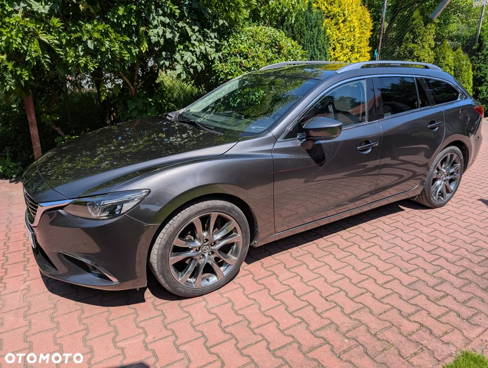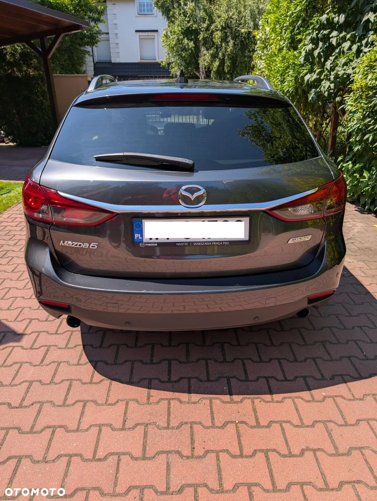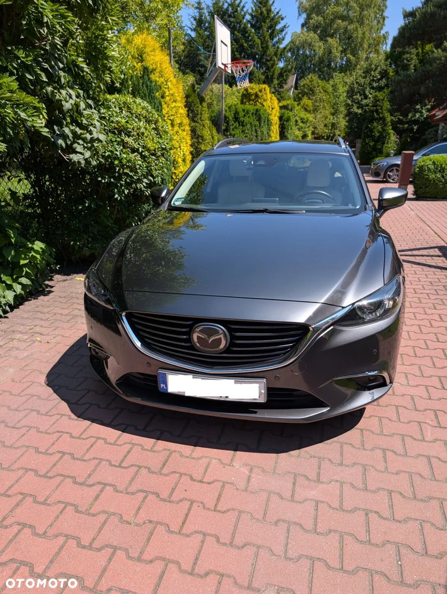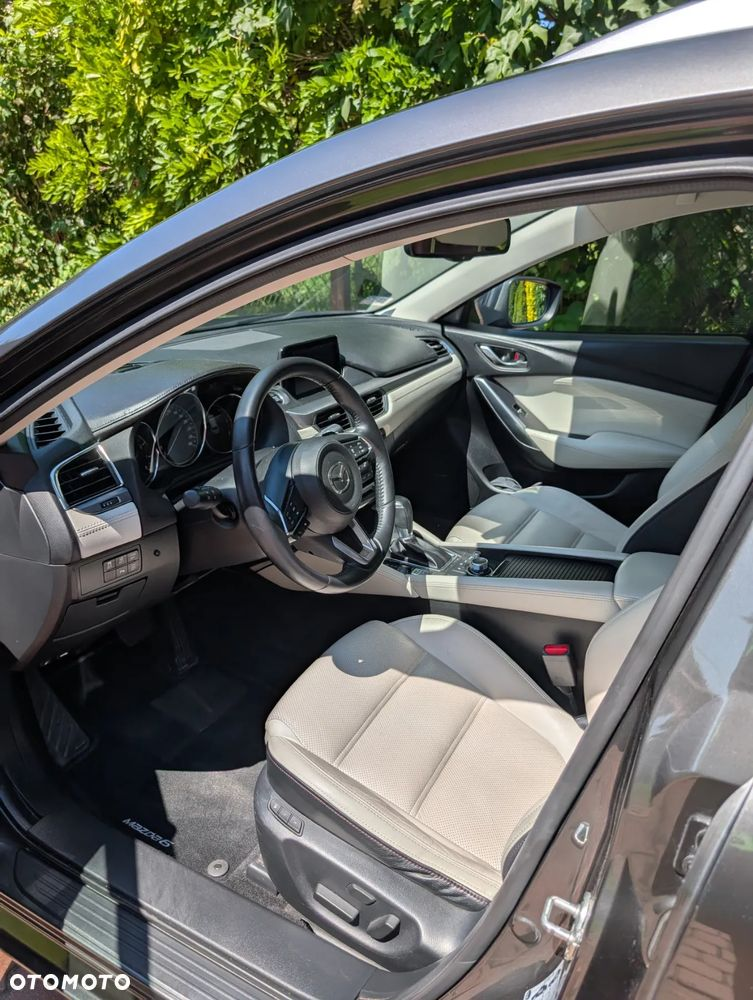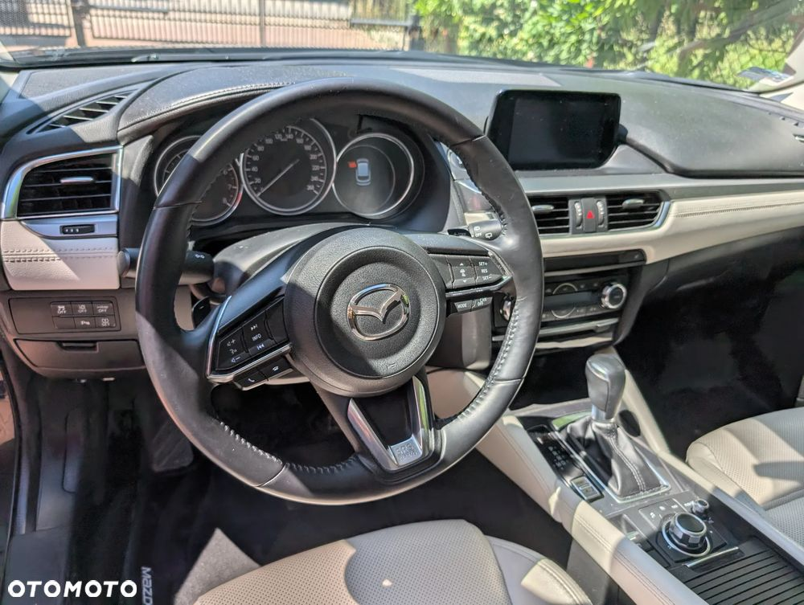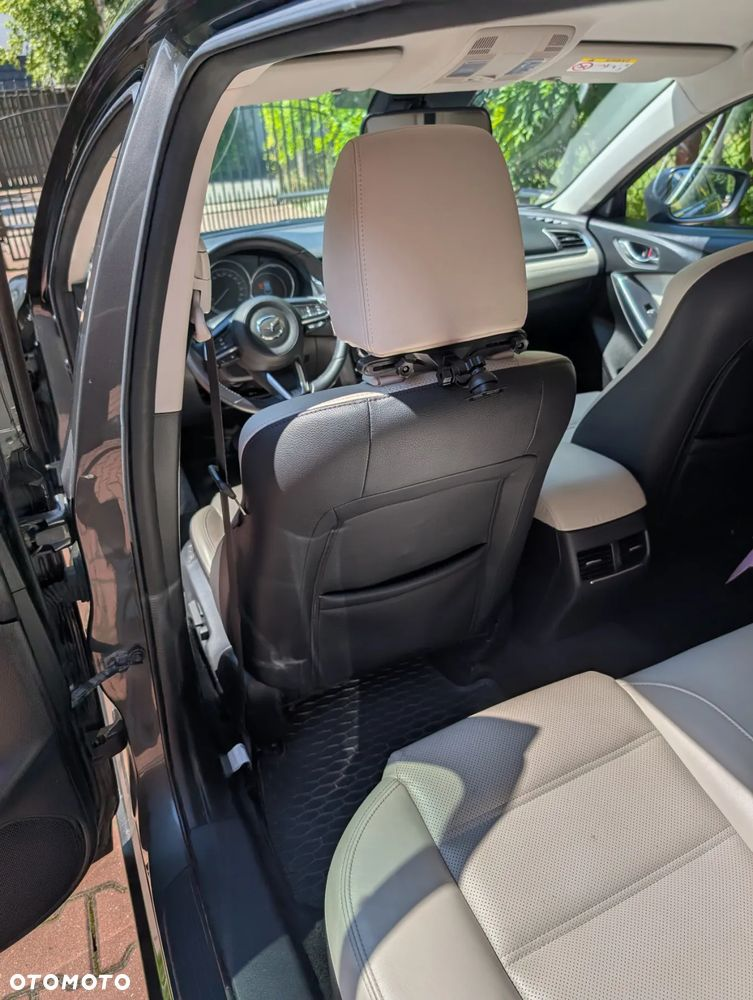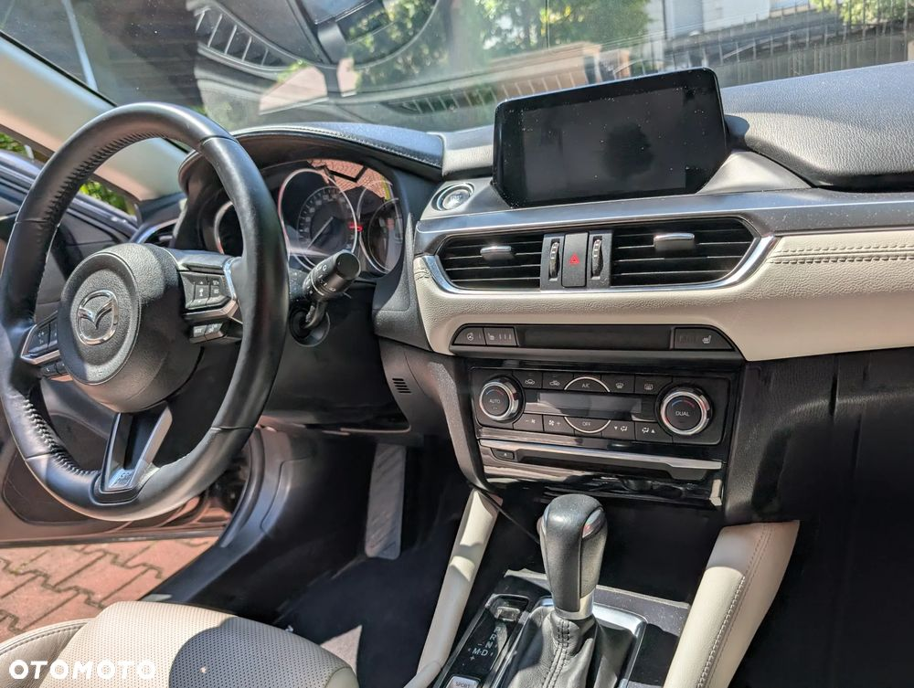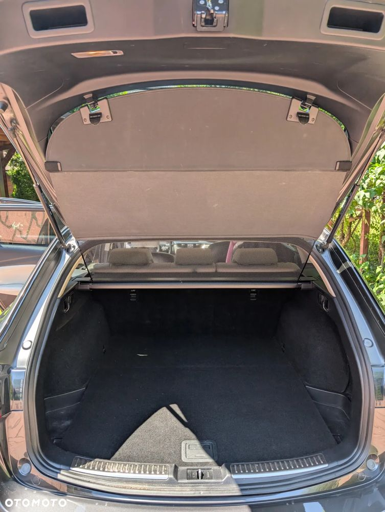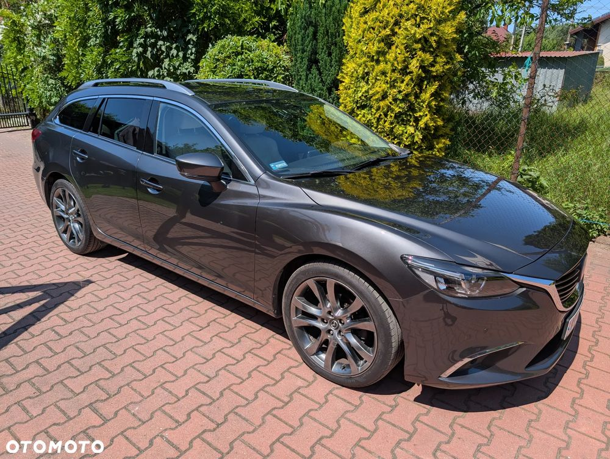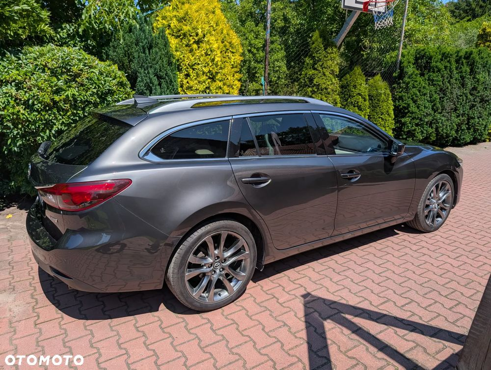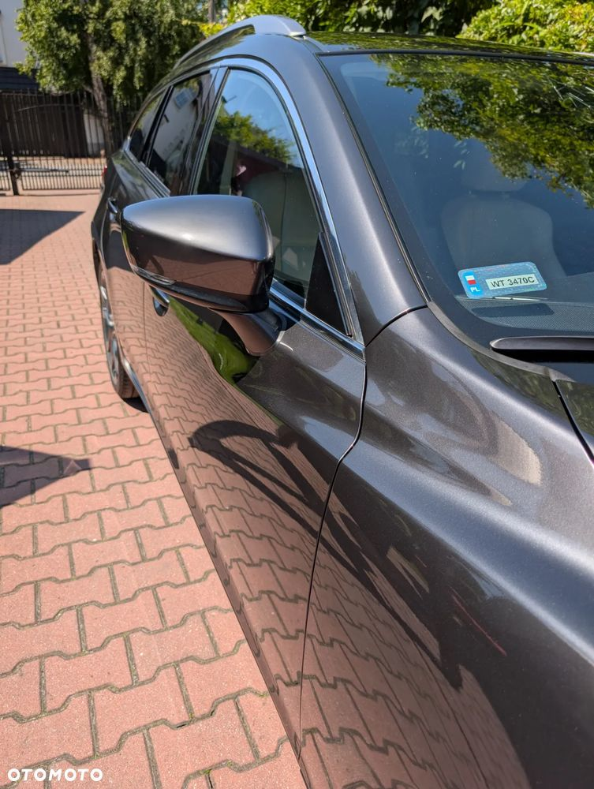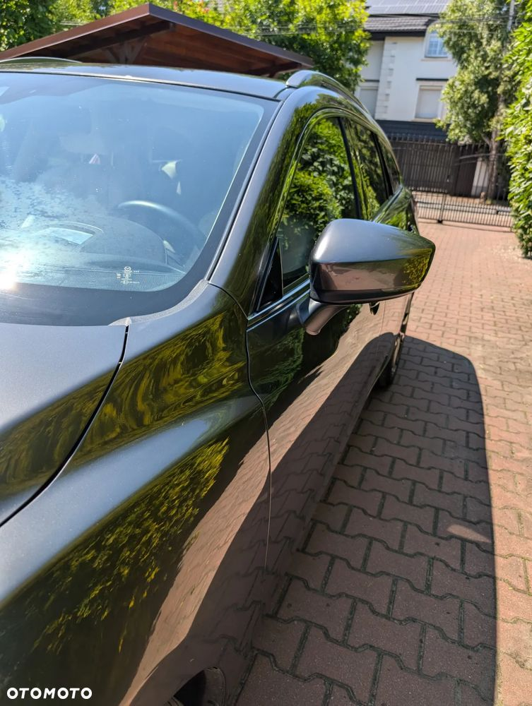